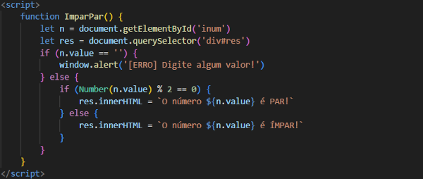
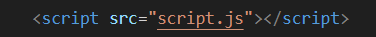

Como usar o JavaScript?
Para utilizar o JavaScript em conjunto com o HTML e o CSS, utilizamos a tag <script> e </script> e mais o parâmetro function (+ um nome para a função) para incorporar código. Todos os comandos em JavaScript devem ser colocado entre essas tags. Por exemplo:

Ou também podemos criar um arquivo somente para o JavaScript, basta utilizar a tag <script:src> e dar um nome para esse arquivo com um final (.js). Por exemplo:
Uma ferramenta muito útil para explorar o JavaScript em sites diversos, é o DevTools, para abrir ele basta clicar com o botão direito do mouse na página desejada e clicar em Inspecionar, assim abrindo uma nova janela com o código do site. Para fazer edição do site, colocamos os códigos no Console, e para descobrir os nomes dados aos parâmetros basta clicar na setinha no canto superior direito e passar por cima do item que você deseja saber o nome.